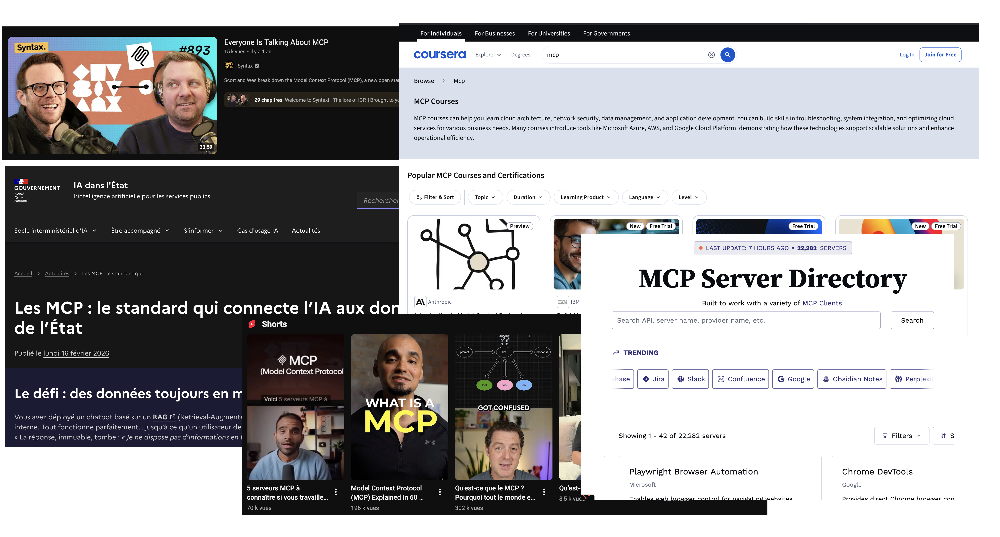

MCP Servers
What They Are, How They Work,
and Why They Solve a Problem AI Agents Do Not Have

Disclaimer: The views and opinions expressed in this presentation are my own and do not represent those of my team or my current client.
Presentation by Naïm LARIF
What You’ll Leave With
What MCP actually is
Its purpose, primitives, and limits.
MCP from a network standpoint
Host, client, server, JSON-RPC, stdio, and Streamable HTTP.
The arguments for MCP, and why most are wrong
Where popular claims confuse interoperability with intelligence, access, or security.
Why we will still use MCP
Because MCP can be technically unnecessary and still make sense in practice.
MCP in One Slide
Model Context Protocol is an open protocol for connecting AI hosts to tools, context, and data.
What servers expose
- Tools, functions the model can call
- Resources, readable context
- Prompts, reusable templates
What the protocol adds
- Finding available tools while the app runs
- JSON Schema arguments
- Standard rules for connecting and exchanging messages
A useful integration system, not an intelligence layer.
The Protocol on the Wire
stdio, local
The host creates an MCP client, which starts the local server and exchanges one JSON-RPC message per line through stdin and stdout.
Streamable HTTP, remote
The host’s MCP client POSTs JSON-RPC to one endpoint. Responses may be JSON or an SSE stream.
AI host → MCP client initialize → MCP server
AI host → MCP client tools/list → MCP server
AI host → MCP client tools/call → MCP server → real API
AI host ← MCP client ← result ← MCP server
Source: MCP transport specification, 2025-11-25
MCP Standardizes Only the Middle of the Call
User request: “Add this product to my cart.”
[1] LLM chooses add_to_cart and generates arguments
↓
[2] MCP client sends tools/call
↓
[3] MCP server validates arguments and calls the commerce API
↓
[4] Commerce API validates the session and updates the cart
↓
[3] MCP server returns an MCP result
↓
[2] Host injects the result into model context
↓
[1] LLM answers the user
In simple terms, MCP is a standard wrapper around the real integration.
MCP Does Not Make an Agent
Now that we know what MCP does, we can separate it from what the hype claims it does.
Observe → Reason / plan → Choose an action
▲ │
│ ▼
Evaluate the result ← Execute through any interface
direct function · SDK · REST · shell · MCP
An agent needs a way to perform actions. MCP is only one possible way to connect those actions.
A Fixed Application Calling a Known API Does Not Need MCP
The model side already exists
Structured tool calling gives the model a clear tool interface with JSON Schema arguments.
The integration side already exists
SDKs, generated OpenAPI clients and ordinary backend functions can execute the call safely.
What the model remembers from training is not a reliable live specification. But a function schema or generated client already provides one, without requiring MCP.
The Discovery Argument
MCP lets hosts find available tools while the application is running. That is real, but its value depends on the application.
Genuinely useful
- Plugin systems that change over time
- Internal company tools
- Tools that change while the app runs
Usually extra work
- A fixed application already knows its tools
- A fixed tool list adds no new function
- OpenAPI is richer for APIs you own
The Real Authorization Stack
User / client
↓ OAuth 2.0 · OIDC · API key · mTLS
Identity provider
↓ access token with limited permissions
API gateway / backend
↓ validates token · checks permissions · limits request rates
Real API
MCP may add another authorization step for clients. The API identity and policy system is still needed.
MCP Secures the Wrapper, Not the Action
What MCP auth can do
Authorize an MCP client to access a remote MCP server for a user.
What remains yours
API credentials, user rights, business rules, approvals, minimum permissions and audit logs.
Keeping credentials away from the LLM is basic server-side design. A Lambda, Cloud Run service or ordinary backend can do the same.
Source: MCP authorization specification, 2025-11-25
The Extra Complexity MCP Can Add
Another connection layerRemote deployments can add delay and another place where calls can fail.
Another serviceDeploy, monitor, scale, patch and debug it.
Harder end-to-end tracingObservability now crosses another process or service.
Duplicated definitionsAPI definitions and MCP tools can become inconsistent.
Where MCP Actually Helps
Internal and proprietary systems
Proprietary databases, older services and custom APIs benefit from a common interface for tools and context.
Local developer-tool integrations
stdio is convenient for IDEs and desktop hosts.
One integration, multiple hosts
When hosts and servers follow the same protocol version, one common interface can reduce the number of custom integrations.
The Hype Distracts From Harder Agent Problems
Reliable agents need strong execution rules, not another integration standard.
unsafe tool results → protection against prompt injection
permissions per task → short-lived credentials · limited access
model mistakes → clear tool definitions · structured outputs · tests
failures across systems → safe retries · observability · stop repeated failures
These are the hard parts of agentic AI. MCP solves none of them.
Why a Thin Protocol Produced Thick Hype
The USB comparison is easy to understand“Build once, connect everywhere” is a very convincing story.
Demos look intelligentConnecting GitHub or a database feels like a new model feature.
Platforms want ecosystemsHosts gain integrations and vendors reach more users.
Adoption makes a standard usefulA standard gains value even when it was not technically required.
The Honest Verdict
| Popular claim | Reality |
|---|
| “Agents require MCP tools.” | False Functions, SDKs and HTTP clients already work. |
| “MCP solves authorization.” | False It secures one connection; API policy remains yours. |
| “MCP standardises integrations.” | True Valuable when several hosts consume the same integration. |
A useful interoperability standard, not a requirement for agentic AI.
Why We Will Still Use MCP
Because the ecosystem is becoming the main value.
ChatGPT, Claude, Gemini, VS Code and Cursor support MCP, while vendors increasingly publish compatible servers.
Practical benefitReuse existing integrations and avoid host-specific code.
Practical warningUse it as a common integration layer, not as the foundation of agent intelligence.
Not technically required. Hard to ignore because many products support it.
Adoption examples: Anthropic, Agentic AI Foundation announcement
Key Takeaways
- MCP is JSON-RPC over stdio or Streamable HTTP, using standard technologies.
- It standardises integration; it does not create agentic behaviour.
- Its strongest benefits are finding tools, reusing them across applications and using existing integrations.
- It does not replace API design, IAM, approvals or security engineering.
- We will use it because it becomes more useful as more products support it, not because agents require it.
Use MCP when it helps, not by default.
Questions?